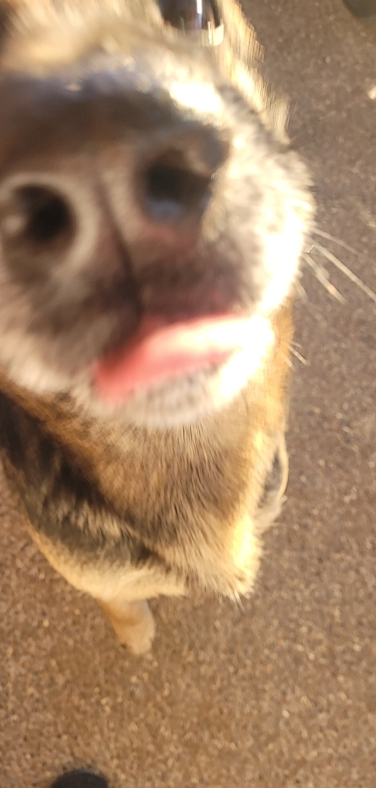

My Crazy Dog
This is Jade and she's a German Shepherd. Sometimes she likes to run around in a circle like a hurricane...
...and other times she likes to plot our deaths while maniacally chewing on a chicken.
Jade likes to:
- Smile at people
- Eat bones
- Destroy the yard
- Beg for table food
- Eat socks
- Ransack the pantry
- Smack people with her tail
- Steal paper from the office
- Eat the paper that she stole from the office
- Jump around in water
- Hunt animals in the night...
- ...then leave them on the porch for us to find in the morning
- Taste the floor
- Sniff the meat drawer in the fridge
- Do a happy dance when she sees food in the microwave
- ...and sleep on the porch

Jade is the clumsiest dog I've seen in my life.
She's pretty big and has no consciousness of herself, so as a result, she thinks it's okay to jump on people outside and knock people over in the yard.
She may look like she's magestically walking off into the shed here, but about 90 seconds before this picture was taken, she slipped on the tile floor inside the house while running around at a billion miles per hour. The year when Jade experienced snow for the first time, there was a lot of ice on the ground and she ran and slipped on the ice and slipped her little feet right into the brick wall next to the backyard gate, and she still hasn't learned her lesson about running around everywhere.
Jade's phat nose
Jade likes to smell people, but I think she only does it for fun and not because she wants to find out who is who. Sometimes she doesn't even smell us. Sometimes she just likes to put her nose on people just because. Jade has a long snout but I don't think she knows she has a long snout.